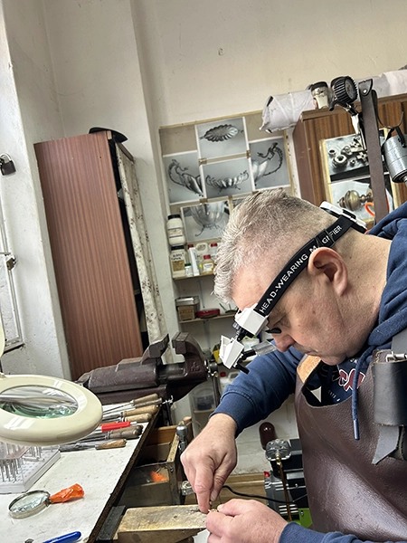

Pracownia jubilerska Łódź – naprawa i renowacja biżuterii

Nasza pracownia jubilerska w Łodzi specjalizuje się w naprawie, renowacji i modyfikacji biżuterii. Łączymy doświadczenie z precyzją wykonania, dzięki czemu przywracamy wyrobom estetykę, trwałość i komfort noszenia. Każde zlecenie traktujemy indywidualnie, dobierając odpowiednią metodę naprawy.
Naprawa biżuterii złotej
Wykonujemy naprawy złotej biżuterii – od drobnych korekt po bardziej złożone prace. Oferujemy m.in. naprawę zapięć, lutowanie łańcuszków, powiększanie i zmniejszanie pierścionków, oprawę kamieni oraz uzupełnianie brakujących elementów.
Każdy wyrób przed naprawą jest dokładnie oceniany i ważony. W razie potrzeby możliwe jest uzupełnienie brakującego złota – także z materiału powierzonego przez klienta. Pracujemy na różnych próbach, najczęściej 585.
Naprawa biżuterii srebrnej
Zajmujemy się również naprawą i odświeżaniem biżuterii srebrnej. Wykonujemy lutowanie, wymianę zapięć, regulację rozmiaru pierścionków oraz czyszczenie i polerowanie. Przywracamy blask zarówno prostym, jak i bardziej ozdobnym wyrobom z kamieniami.
Naprawa biżuterii sztucznej
Naprawiamy także biżuterię sztuczną i ozdobną. Oferujemy poprawę zapięć, łączeń, wymianę elementów oraz odświeżenie wyglądu. Każdą realizację dostosowujemy do rodzaju materiału i stopnia uszkodzenia.
Wycena i podejście
Wyceny dokonujemy na miejscu, a wstępna ocena możliwa jest również na podstawie zdjęć. Stawiamy na jasne zasady, dokładność i dobrą komunikację z klientem.
Doświadczenie
Pracownię prowadzi doświadczony złotnik, który od lat zajmuje się renowacją biżuterii oraz przetopem złota. Dzięki temu możemy nie tylko naprawić wyrób, ale także nadać mu nową formę.
Zapraszamy do skorzystania z usług pracowni jubilerskiej w Łodzi.